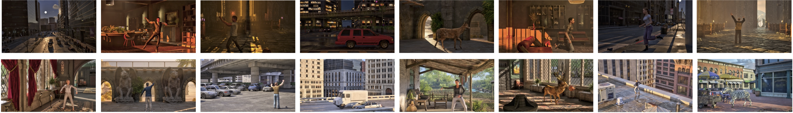
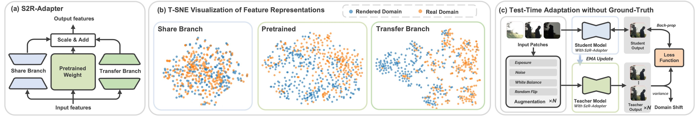

The generalization of learning-based high dynamic range (HDR) fusion is often limited by the availability of training data, as collecting large-scale HDR images from dynamic scenes is both costly and technically challenging. To address these challenges, we propose S2R-HDR, the first large-scale high-quality synthetic dataset for HDR fusion, with 24,000 HDR samples. Using Unreal Engine 5, we design a diverse set of realistic HDR scenes that encompass various dynamic elements, motion types, high dynamic range scenes, and lighting. Additionally, we develop an efficient rendering pipeline to generate realistic HDR images.
To further mitigate the domain gap between synthetic and real-world data, we introduce S2R-Adapter, a domain adaptation designed to bridge this gap and enhance the generalization ability of models. Experimental results on real-world datasets demonstrate that our approach achieves state-of-the-art HDR reconstruction performance.
Main Idea
The generalization of learning-based high dynamic range (HDR) fusion is often limited by the availability of training data, as collecting large-scale HDR images from dynamic scenes is both costly and technically challenging. To address these challenges:
We propose S2R-HDR, the first large-scale high-quality synthetic dataset for HDR fusion, with 24,000 HDR samples.
Using Unreal Engine 5, we design a diverse set of realistic HDR scenes that encompass various dynamic elements, motion types, high dynamic range scenes, and lighting.
Beyond the core imagery, we additionally provide per-frame rendered auxiliary data including optical flow, depth maps, surface normals, and diffuse albedo information.

Illustration of our S2R-HDR dataset, covering both indoor and outdoor environments under diverse lighting conditions, including daytime, dusk, and nighttime, as well as various motion types such as humans, animals, and vehicles.
HDRs
Optical Flow
Depth
Diffuse
Normal
Beyond the HDR sequences, we additionally provide per-frame rendered auxiliary data including optical flow, depth maps, surface normals, and diffuse albedo information, significantly expanding S2R-HDR's potential applications across various computer vision tasks.
To further mitigate the domain gap between synthetic and real-world data, we introduce S2R-Adapter, a domain adaptation designed to bridge this gap and enhance the generalization ability of models.

Structure of S2R-Adapter and t-SNE visualization of feature representations from different branches.
Visual Results
Comparing HDR fusion models trained on our S2R-HDR dataset, with the proposed domain adapter S2R-Adapter, with the same model trained on previous SCT and Challenge123 datasets.
Results show our dataset and training scheme can reduce ghosting artifacts under large motion (left) and recover very high dynamic range scenes, such as direct sunlight (right).
Visual results on the SCT datasets (left) and Challenge123 datasets (right) with ground-truth training data. Our method effectively eliminates artifacts caused by motion occlusions, delivering superior visual quality.
Visual results on real-captured scenes show our solution reduces ghosting in backlit scenes (left) and recovers highlights (right).
BibTeX
@inproceedings{wang2025s2r,
title={S2R-HDR: A Large-Scale Rendered Dataset for HDR Fusion},
author={Wang, Yujin and Wu, Jiarui and Bian, Yichen and Zhang, Fan and Xue, Tianfan},
booktitle={The Fourteenth International Conference on Learning Representations},
year={2026}
}